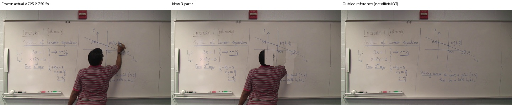
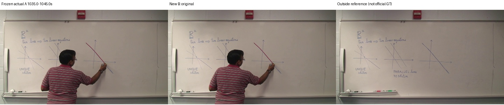
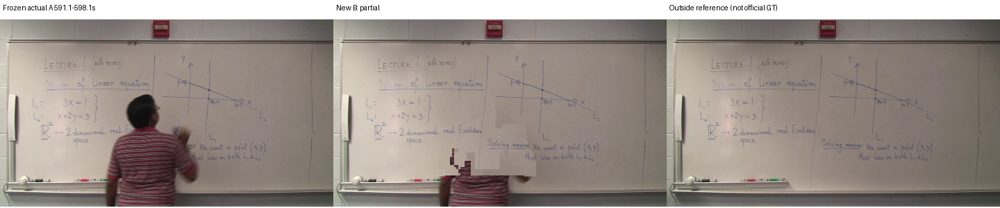
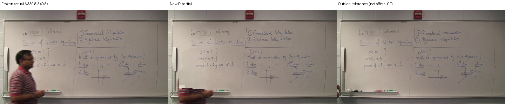

공식 GT가 아닌 보류 원본과 비교합니다.

{'A': {'precision': 0.442608106482273, 'recall': 0.980846438262691, 'f1': 0.6099676120913481, 'gt_pixels': 63017, 'predicted_pixels': 157923, 'gt_components_area_ge_10': 169, 'component_coverage_at_80pct': 0.9822485207100592}, 'B': {'precision': 0.45541987769742626, 'recall': 0.9957947855340622, 'f1': 0.6250002166182871, 'gt_pixels': 63017, 'predicted_pixels': 155843, 'gt_components_area_ge_10': 169, 'component_coverage_at_80pct': 0.9881656804733728}}
{'A': {'precision': 0.3231625407791211, 'recall': 0.959644595780905, 'f1': 0.483503992110818, 'gt_pixels': 37591, 'predicted_pixels': 135486, 'gt_components_area_ge_10': 50, 'component_coverage_at_80pct': 0.98}, 'B': {'precision': 0.3231625407791211, 'recall': 0.959644595780905, 'f1': 0.483503992110818, 'gt_pixels': 37591, 'predicted_pixels': 135486, 'gt_components_area_ge_10': 50, 'component_coverage_at_80pct': 0.98}}
{'A': {'precision': 0.4415198548388263, 'recall': 0.9711706811266552, 'f1': 0.6070560072970465, 'gt_pixels': 58829, 'predicted_pixels': 138329, 'gt_components_area_ge_10': 142, 'component_coverage_at_80pct': 0.971830985915493}, 'B': {'precision': 0.7455958804543327, 'recall': 1.0, 'f1': 0.854259440919709, 'gt_pixels': 58829, 'predicted_pixels': 81174, 'gt_components_area_ge_10': 142, 'component_coverage_at_80pct': 1.0}}
{'A': {'precision': 0.7118795514452934, 'recall': 0.9882470939203786, 'f1': 0.8276005788802147, 'gt_pixels': 77768, 'predicted_pixels': 111915, 'gt_components_area_ge_10': 161, 'component_coverage_at_80pct': 0.9937888198757764}, 'B': {'precision': 0.9994397270848377, 'recall': 0.999987141240613, 'f1': 0.9997133592256865, 'gt_pixels': 77768, 'predicted_pixels': 80318, 'gt_components_area_ge_10': 161, 'component_coverage_at_80pct': 1.0}}